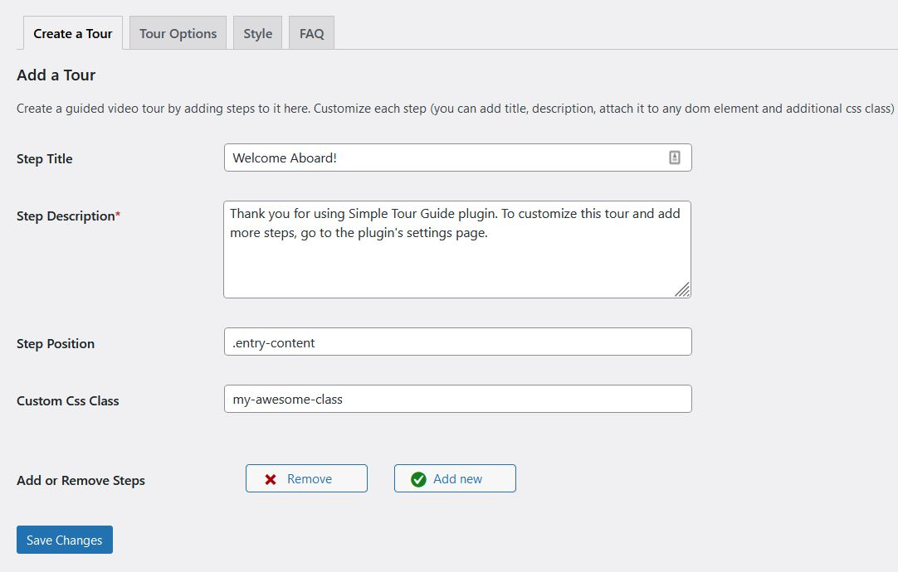
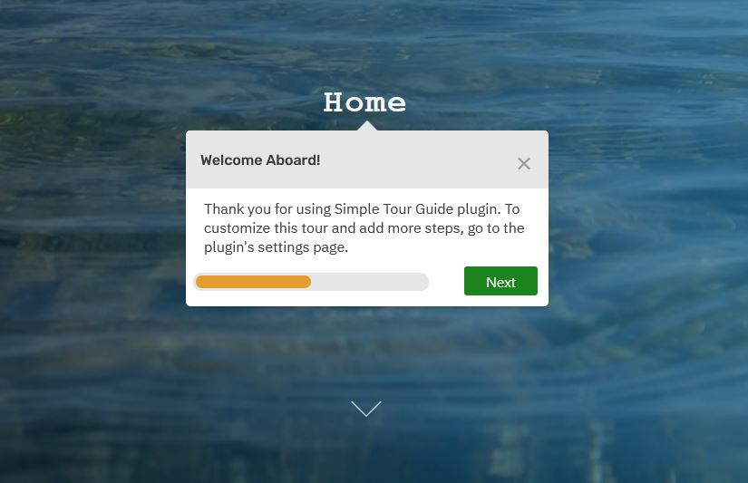

Two Ways to Add a Tour Guide in WordPress (With and Without a Plugin)
Why is User Onboarding Important?
Guided tours matter. In fact, if you are still not using interactive user introductions to guide users throughout your app’s content, you should probably start doing that as soon as possible. Let me tell you why. When the user visits a web page for a first time, he probably arrived there because he was searching for something in the first place and he might or might not figure out where to look for it. If the user cannot find this information quick enough, he is highly likely to close the webpage and search somewhere else. This is the reality. And I am not going to blame the user. In today’s high tech world, we are overwhelmed with information. As the information on the internet is steadily growing, so are internet users getting more and more impatient to look for it. In fact, a study by Google claimed that 53% of mobile users will leave a website if it does not load for 3 seconds. And this study was done more than 5 years ago, in 2016. A step-by-step user intro tour is a great way to enhance your app’s user experience. It is an awesome tool, because it literally “takes the users by the hand”, guiding them through your content, so they can easily find what they were searching for and stay longer on your page. If you are guiding the user through a product or service, he might decide to make a purchase or simply drive more traffic by recommending your business.
Shepherd.js
Shepherd.js is an awesome open source js library for a step-by-step user onboarding. It uses Popper.js, another open source library, to create a tour with steps that guide users through your application. It includes minimal css which makes it easy to customize to any design. It is easy to use, has great documentation and awesome user support. Another cool feature of Shepherd.js is that it is WCAG compliant (includes keyboard navigation and focus trapping) to help make youр application more accessible, user friendly and unique. In this tutorial, I am going to show you two ways to integrate Shepherd.js in WordPress (with and without a plugin), so you can show an interactive guided tour to your visitors.
How to add a Guided Tour to WordPress with a Plugin
The most convenient way to create an intro tour is by using Simple Tour Guide - a lightweight and easy-to-use plugin that integrates Shepherd.js to WordPress with a single click. With Simple Tour Guide, creating an interactive user guide feels like a breeze. You can add as many steps as you want, choose on which pages to display the tour and even add a progress bar to display tour progress. You also have the setting to display the tour only once, instead of displaying the tour on every page reload. There are also options to change the default styles of the steps, as well as additional customization options. All of this is done from a friendly admin interface, so you do not have to write a single line of code. There are no restrictions or any hidden costs - this plugin is 100% free and open source.

Image One: Add tour steps.
Install the plugin from the admin dashboard => plugins => add new, then go to the Settings => Simple Tour Guide and customize accordingly. You can add as many steps as you want directly from the WordPress admin. Link the step to any page element and assign custom css class to it for additional customization (optional).

Image Two: Show the Tour on the Site Frontend.
This is how the step will appear on the site frontend. To link a step to a paticular page element, you need to find out the element’s selector. Visit the webpage you want to add the tour, right click on the element you want to target, then click “inspect”. This will open the browser’s dev tools. Write down the element selector. Id, classname and tagname will all work, as long as you paste them in the plugin’s settings page in the following format: #id, .classname, tagname. If you do not assign an element to a particular step, this is also fine, the step will appear in the middle of the screen.
Use the “Style” tab from the plugin settings to customize the progress bar and change the color of the buttons. For more customization options, assign an additonal classname to a specific step via the “Create a Tour” tab (or use the .stg classname to target all the steps) and add your css in the theme customizer (Appearance => Customize => Additional css tab).
To show te tour on a particular page only, e.g. “Our Services”, go the page editor screen, add a shortcode block and paste the [stg_kef] shortcode. You also need to go to plugin’s settings page => tour options tab and remove the tick from the “Show the tour on all pages” field.
How to add a Guided Tour to WordPress without a Plugin
For the more tech-savvy readers, who want to dive deeper into coding, I will also show you how to integrate Shepherd.js to WordPress without a plugin. Please note that you will still need to add your own logic to hide the tour after the user dismisses it, as Shepherd.js does not handle this for us. First, you need to add Shepherd.js scripts and styles. To do that, you would need access to your server via ftp or C-panel to manage your files. Add the following snippet to your child theme’s functions.php file:
<?php
/**
* Load Guided App Tour with Shepperd.js
* Small Library to create interactive feature tour to guide site visitors
* @link https://shepherdjs.dev/
**/
function my_theme_load_shepperd_js() {
wp_enqueue_style( 'shepherd-style', 'https://cdnjs.cloudflare.com/ajax/libs/shepherd.js/8.1.0/css/shepherd.min.css', array(), '8.1' );
wp_enqueue_script( 'shepherd-script', 'https://cdnjs.cloudflare.com/ajax/libs/shepherd.js/8.1.0/js/shepherd.min.js', array(), '8.1', true );
wp_enqueue_script( 'shepherd-config', get_template_directory_uri() . '/assets/js/shepherd.js', array(), '', true );
}
add_action('wp_enqueue_scripts', 'my_theme_load_shepperd_js', 9);
This code is doing the following: 1. it is loading Shepherd css and js through a cdn 2. it is including our own custom script, called “shepherd.js”. You would need to create and modify this file to make things work.
Now, create assets folder (in your child theme’s root folder) and inside it create another folder called js. Inside the js folder, add a js file called shepherd.js. Finally, add the following js code in that file:
const tour = new Shepherd.Tour({
defaultStepOptions: {
classes: 'simple-tour-guide',
scrollTo: true,
cancelIcon: {
enabled: true,
},
useModalOverlay: true
},
confirmCancel: true,
});
//Construct the steps
const steps = [{
title: 'My Awesome Tour Guide : Step One',
text: 'This step is attached to the bottom of the <code>header</code> element.',
attachTo: {
element: 'header',
on: 'bottom'
},
classes: 'my-awesome-additional-class',
buttons: [{
text: 'Next',
action: tour.next
}]
},
{
title: 'My Awesome Tour Guide : Step Two',
text: 'This step is attached to the bottom of the <code>.entry-content</code> element. If no such element is found, the step appears in the center of the screen.',
attachTo: {
element: '.entry-cotent',
on: 'bottom'
},
classes: 'my-awesome-additional-class',
buttons: [{
text: 'Back',
action: tour.back
},
{
text: 'Finish',
classes: 'shepherd-button-close',
action: tour.hide
}
]
},
]
tour.addSteps(steps);
// Initiate the tour
tour.start();
With this code, we are creating two steps and we are adding the steps to a tour. Now, when you go to your site’s homepage, you should be able to see the tour guide! To add more steps, just add more objects inside the steps array. For a full list of the available options, check Shepherd.js documentation.
Creating interactive user walktroughs does not have to be difficult anymore. In fact, there should be an easy and efficient way for any webmaster to to guide his visitors throughout the site content. With Shepherd.js, you can do exactly that. I hope that you found this tutorial useful. Feel free to contact me by email if you need any additional help with Shepherd.js integration to WordPress. Good luck and happy blogging!